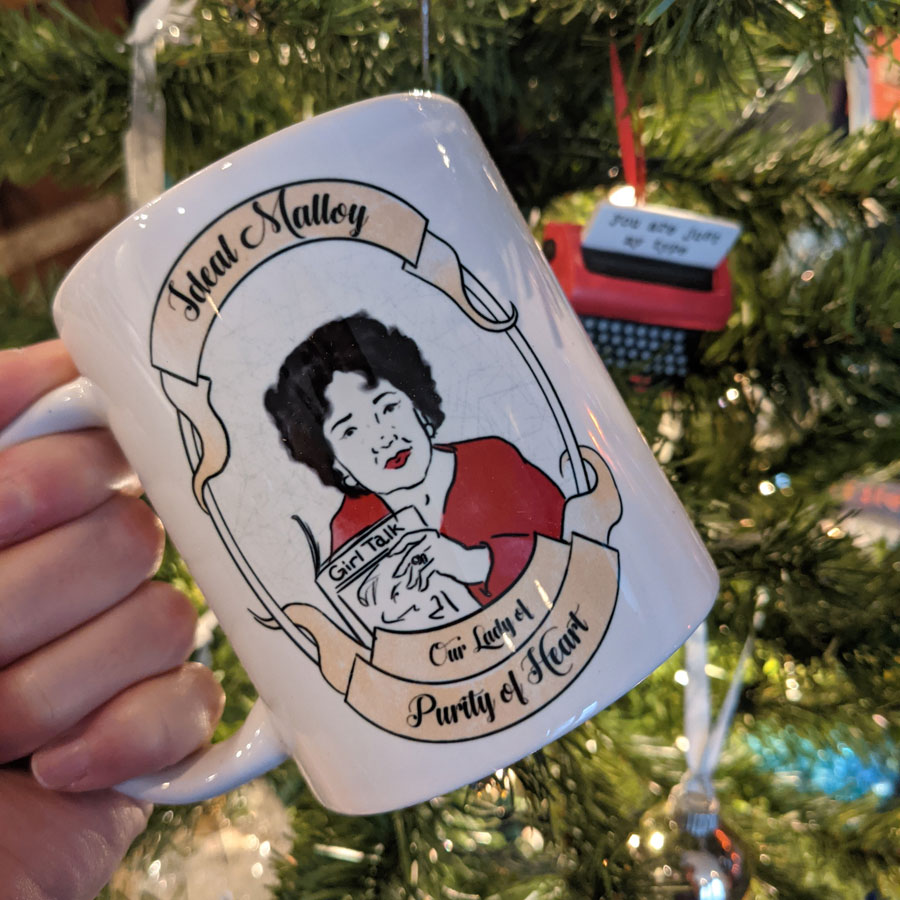

Bingo, Murder, and Big Hair
Once a month we watch two episodes of Murder, She Wrote, drink, and play bingo. We live tweet and instagram our bingo progress, so you can play along.
Join us in re-watching all 264 episodes with internet strangers, turned hilarious friends. Download the Bingo cards and use #MurderSheDrank on Twitter and Instagram to participate.
Join us
 Join our Discord
Join our Discord
Episodes for June 16th
Friday, 8pm Central / 6pm Pacific
Join us for mullets and incompetent law enforcement. Participate by following our live tweets of the shows. Join in on the action by tagging your tweets with #MurderSheDrank and play along with our free bingo cards. This Friday we are watching:
Final Curtain
S9: Episode 11 Originally aired 10 Jan 1993 The community center of Cabot Cove is getting ready to produce a play with retired actor David North. What follows is interrupted rehearsals and a murder in town.
Double Jeopardy
S9: Episode 12 Originally aired 17 Jan. 1993 A not-guilty verdict in the murder of a community activist leads to threats of violence.
Download Free Bingo Cards
Each set has several unique cards. All PDF cards have an ID on the bottom so you and your friends can choose similar or different cards.
Current Bingo Cards
- Online: Set 7 (interactive cards)
Play on your phone or computer. Auto-generated with tropes and community square recommendations. - PDF: Set 6 (three cards)
Character-based Cards: Focuses on general tropes, JF actions, non-Cabot Cove events, and a free space. Made for post-season 7 episodes after JF moves to NYC.
Special Event Cards
- Supernatural Bingo (4 cards: Halloween Special)
- The 100 Bingo (3 cards: #HyggeLypse Special)
- Rosemary & Thyme Bingo (2 cards)
Archive Cards for Murder She Wrote
Cards that are good for seasons 1-7, before Jess moves to New York City and Cabot Cove is still a main scene.
- Online: Set 5 (interactive cards)
Play on your phone or computer. For seasons 1-7. - PDF: Set 4 (three cards)
Character-based Cards: Focuses on general tropes and Doc, Grady, and Sheriff events. Includes tweet events and a free space - PDF: Set 3 (nine cards)
Cards G1-I3: Jessica Fletcher-centric and general squares. Includes audience participation events and a free space.
FAQs
How do I play?
Easily, you don't even need to play along with us; you can do it on your own time.
- Download and print the Bingo Cards.
- Start an episode of Murder She Wrote.
- Mark a bingo square when the event happens in the episode.
- When you get 5 in a row you win MSD Bingo and earn insane bragging rights.
Do I need to use a new bingo card for each episode?
No, that would make bingo very hard. Continue using the bingo card you chose if you watch more than one episode. It normally takes two episodes to get close to winning.
Are the episodes streaming anywhere?
Yes! All seasons are available on the Peacock app and Roku. Seasons 1-5 are streaming on Amazon Prime in the U.S. Canada has all seasons available through Amazon Prime.
Do I need to drink to participate?
Absolutely not. In fact, half of Murder HQ are sober folks. "Murder She Drank" just sounded hilarious to us and we had to run with it. We do encourage crappy jokes and snacking though.
Is this a regular thing?
Indeed, we've been doing this since 2014. We normally meet at 8pm Central on the third Friday of the month, but double check as this sometimes changes. We are currently working our way through season 9.
Who are the "murder buddies"?
We refer to the folks who join us during the live tweet of Murder She Drank as "murder buddies." If you have ever joined us for a live watch and tweet, you are part of the murder buddy crew. We think you are awesome.
How do you divide the seasons/episodes?
After some trial and error we decided to do one season per year. We plot the episodes so that we do two episodes a month and there are normally 22 episodes in a season. This normally leaves us with one month where we technically have no episodes to watch. Some years we do a special "Halloween" edition where we watch a different show (*cough*Supernatural*cough*) and other years we decide to take a break in December so we can relax and refresh for the new year. We always announce what our plans are toward the end of the year, so keep an eye out.
Why do your bingo cards start with "set 3"?
We periodically created new bingo cards as we get on in the series. Sets 1-2 were very hard because they were specific to certain episodes. The earlier cards were based on a drinking game created by Bonnie Burton. As we got on in the series we ended-up expanding the bingo squares to more open tropes of the show as well as common things that we saw happen within the Twitter community. Since we've made the change folks are actually able to win bingo, which is a mighty great feeling.
What is the Discord used for?
We started the Discord server as a back-up in case Twitter went down / goes down. We have started using it as a space for sub-groups of the Murder Buddies to gather, such as for book clubs. Patreons also have their own channel in the server.
About your murder bosses
Murder She Drank is run by Kathy (she/her) and Kateri (she/her). Kathy is in CST and Kateri is in PST; they watch together via the magic of video chat. We often are joined via video by our friends in other time zones, who we refer to as "Murder HQ." Kathy tends to be the one tweeting and is also the one who runs this web page; feel free to reach out to her if any corrections are needed.
Elsewhere
Patreon
St. Ideal Molloy
Support our hijinks and get free downloads, votes on special episodes, and behind the scenes looks at Murder HQ.
Hearth & Heather Podcast
Your co-murder bosses also host a quarterly podcast about how we interact with place through art and nature. Available on iTunes, Spotify, and Google Podcasts